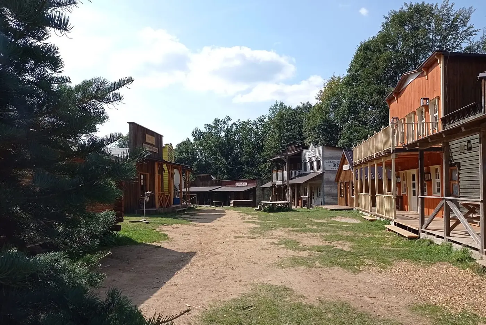

„Poblíž je vesnička Kamenice, a tak se to u nás mělo jmenovat Stonevillage, ale my jsme chtěli být město.“

Westernové městečko v lesích u Humpolce
Na hlavní ulici stojí banka, úřad šerifa, kavárna, kasino, obchod a kostel se zvonem. Postavila je parta kamarádů vlastníma rukama a žádný z těch domů není kulisa.
Vyhláška
V roce 2026 je městečko pro veřejnost dočasně zavřené.
Sezónu 2027 sem doplníme, jakmile bude jasná. Školy, oddíly a skupiny se na termín mohou ptát už teď.
Zeptat se na termínVstupné platí i ten, kdo jde jen do kavárny. Když je městečko zamluvené pro soukromou akci, najdete to v programu.
Nejde o podívanou zpoza plotu. Laso, tomahawk i rýžovací pánev dostanete do ruky a vždycky je poblíž někdo, kdo poradí nebo to předvede.
Střelba na terč, pro děti i dospělé.
Hod na dřevěný terč. Jde to líp, než čekáte.
Ukážeme, jak laso roztočit a kam s ním mířit.
Hod podkovou na kolík. Nejtěžší z lehkých disciplín.
Pánev, voda a trpělivost, jako v Kalifornii.
Střelba na plechovky z dobových zbraní.
Kožený váček, přívěsek, provaz nebo ruční papír na památku.
Jak se osidloval Divoký západ a co si osadníci vezli s sebou.

Vyberte program a rovnou uvidíte dny, kdy je místo. Rezervace je potřeba vždy, jídlo zařídíme po domluvě.
Termíny a kapacity jsou v téhle ukázce vzorové. Ceny školních programů vycházejí z dřívějších sezón.
Formulář se přizpůsobí programu, který vyberete. Hlídá velikost skupiny a rovnou počítá odhad ceny.
Takhle vypadal poslední vyhlášený rok. Termíny na rok 2027 doplníme.
„Poblíž je vesnička Kamenice, a tak se to u nás mělo jmenovat Stonevillage, ale my jsme chtěli být město.“
Z dálnice D1 sjeďte na exitu 90 u Humpolce. Dál vás na parkoviště dovedou cedule Stonetown.
Vystupte na zastávce Kamenice u Humpolce na trati Havlíčkův Brod – Humpolec. Od zastávky jděte po modré turistické značce.